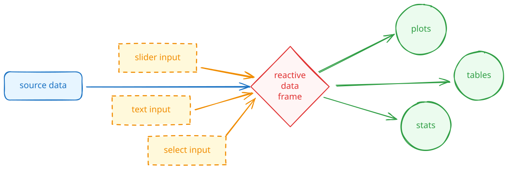
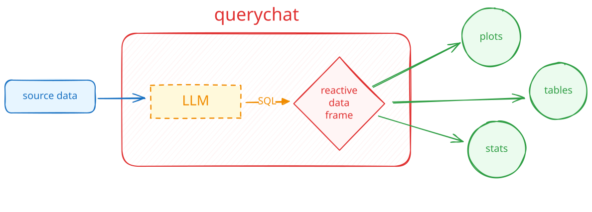
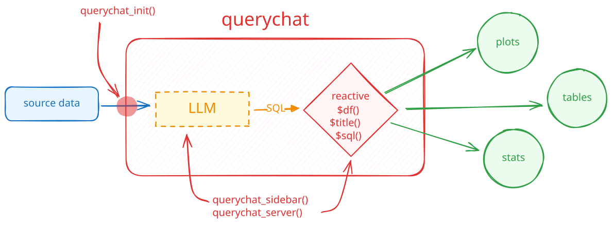

shinychat and querychat
Programming with LLMs in R and Python
posit::conf(2026)
2026-09-14
querychat
querychat

Ask questions. Inspect the SQL.
querychat turns a question about your data into a SQL query, runs the query, and shows the result.
- Ask questions in natural language.
- Inspect the generated SQL.
- See the filtered data in the same app.
The built-in app includes chat, a data table, and a SQL view.
Start with a data frame
Your Turn 26_querychat
Try to reach a conclusion from your earlier Posit Assistant conversation.
Ex: Which neighborhood has the most private rooms?Open the data drawer and select Show Query to inspect the SQL.
Restart the app with
data_dictincluded.
Among private rooms, which property types are most common?



querychat in R
library(shiny)
library(bslib)
library(ellmer)
library(querychat)
mtcars_qc <- QueryChat$new(mtcars, client = chat_posit())
ui <- page_sidebar(
sidebar = mtcars_qc$sidebar(),
# plots, tables, etc.
)
server <- function(input, output, session) {
mtcars_qc_vals <- mtcars_qc$server()
output$table <- renderTable({
mtcars_qc_vals$df()
})
}
shinyApp(ui, server)querychat in Python
import polars as pl
import querychat
from chatlas import ChatPosit
from shiny import App, render, ui
mtcars = pl.read_csv("data/mtcars.csv")
mtcars_qc = querychat.QueryChat(mtcars, "mtcars", client=ChatPosit())
app_ui = ui.page_sidebar(
mtcars_qc.sidebar(),
# plots, tables, etc.
)
def server(input, output, session):
mtcars_qc_vals = mtcars_qc.server()
@render.data_frame
def data_table():
return mtcars_qc_vals.df()
app = App(app_ui, server)Demo: querychat dashboard
👨💻 _demos/27_querychat
shinychat
shinychat
A quick chat app in R
A chat app in R
For an app other people can use, create one client per session.
A chat app in Python
Your Turn 06_word-games
I’ve set up the basic Shiny app snippet and a system prompt.
Your job: create a chatbot that plays a “20 questions” style word guessing game with you.
The model was given a secret word, and it’s your job to guess it.
Chat can be the application
page_chat() gives a conversation its own page.
It includes conversation history, a chat home, and room for artifacts and other application UI.
Start with page_chat()
R
Give people a useful start
A greeting explains the app and can offer prompts they can use or edit.
Your Turn 24_shinychat-1
Open the Blockbuster renewal assistant.
Add a greeting with three suggestion cards for common renewal tasks.
Use a suggestion to draft letters for the top three lapsed members.
Discussion: Did your app…?
Give the renewal agent a clear purpose before anyone typed?
Offer prompts that match the jobs the agent can do?
Keep the agent tools and skills out of the app code you edited?
Preserve the conversation after you followed a suggestion?
Artifacts stay beside the conversation
A drawer can hold the drafts an agent creates.
The user can select a letter, edit it in a code editor, and save it to the workspace.
Tools can control the app
When the agent writes or edits a letter, it calls show_letter().
show_letter() selects that file in the drawer and opens it for the person to review.
Your Turn 25_shinychat-2
Complete
show_letter()so it selects a draft and opens the letter drawer.Ask the agent to draft a renewal letter for Elaine Wu.
Edit the letter in the drawer, save it, then ask the agent to revise that draft.
Discussion: Did your agent…?
List the drafts before it created a new version?
Write a draft named
elaine-wu-v1.mdor the next available version?Open the letter it wrote in the drawer?
Preserve your edit when you saved it?
Read the current letter before it tried to edit it?